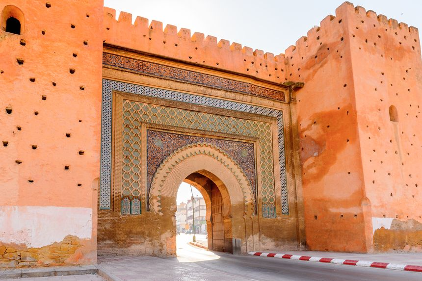
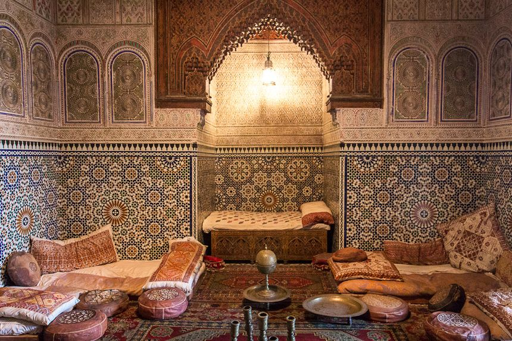
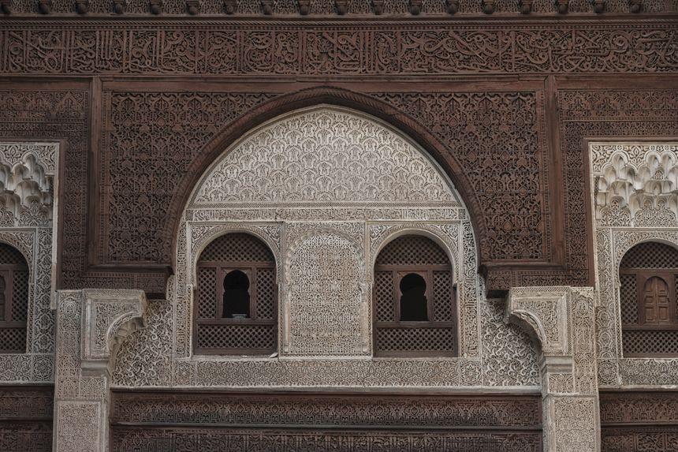

La Médina et ses vestiges
Meknès, c’est avant tout un mur d’enceinte et des portes aux dimensions monumentales, comme
celles de Bab Mansour. Surnommée «la ville aux cent minarets», en raison de ses nombreuses mosquées,
on peut également y voir les vestiges de l’ancien palais royal, le mausolée de Moulay Ismaïl, ou encore
le musée Dar Jamaï, transposé dans une sublime demeure au style andalou, datant de 1881.

Le Palais Dar Jamaï
Également connue sous le nom de « Maison Jamaï », cette belle demeure palatiale fut autrefois
la résidence du grand vizir du sultan Hassan, et illustre parfaitement le style de vie des grandes
familles marocaines de la fin du XIXème siècle. On y retrouve toutes les pièces utilisées à l’époque,
à savoir des chambres, salons de réception, un bassin et des jardins, une mosquée, un bain maure, un foundouk
(hébergement pour les marchands de passage), et d’autres pièces de vie. Aujourd’hui rebaptisées en musée des Arts
Indigènes, les pièces servent désormais de salles d’exposition dédiées au savoir-faire et à
l’artisanat marocain : céramiques, broderies, poteries, bois peint et sculpté, poterie, tissage… Avant d’être
converti en musée, le palais a également servi durant une courte période, d’hôpital militaire
sous le protectorat français.

La Médersa Bou Inania de Meknès
En arabe, une médersa est une école coranique, une université théologique où l’on enseigne
la religion musulmane. La médersa Bou Inania de Meknès est la plus grande de la ville mais aussi l’une
des plus belles de tout le pays, située en plein centre de la médina, à quelques pas du Musée Dar Jamaï.
Trésor de l’époque des Mérinides, son architecture traditionnelle se compose de bois de cèdre sculpté,
de mosaïques bleues et vertes, et de moucharabiehs, un vrai spectacle pour les yeux ! Aujourd’hui,
la médersa est ouverte au public, musulman comme non musulman, pour seulement quelques dirhams.
Sympa à voir, les petites chambres qui servaient de dortoirs aux étudiants !